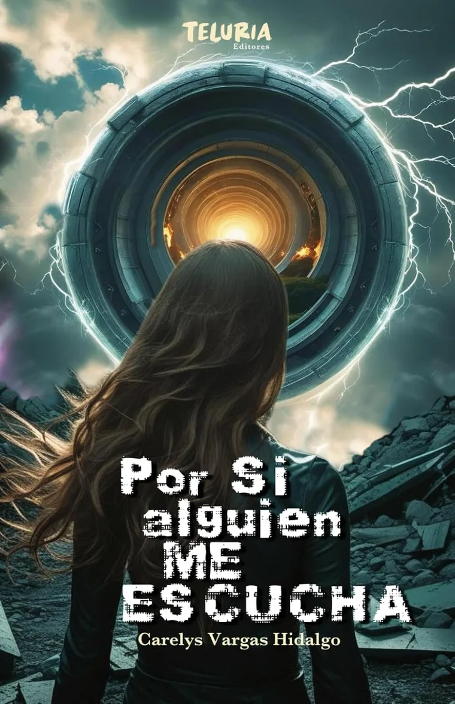

La primera novela de Carelys Vargas
Por si alguien
me escucha
Elena y Sebastián tienen que elegir. Cruzar el portal hacia lo desconocido o cerrarlo para siempre.
Fantasía · Romance · Distopía

La novela
¿Renunciarías a la última esperanza?
El mundo de Elena y Sebastián está al borde del colapso. El tiempo y el espacio han dejado de ser fronteras, y algo más profundo que la memoria aún los une.
Entre la multitud se alza una voz para quienes todavía pueden quedarse, luchar y recordar. ¿Qué queda de nosotros cuando los recuerdos empiezan a desvanecerse?
- Autora
- Carelys Vargas Hidalgo
- Editorial
- Teluria Editores
- ISBN de la edición impresa
- 9798296760760
- Idioma
- Español
La autora
Carelys Vargas Hidalgo
A Carelys le interesan la magia de lo cotidiano y la poesía que encuentra en la melancolía.
Desde pequeña le fascinan las complejidades del alma humana. Su primera novela, Por si alguien me escucha, nace de una pregunta sobre la memoria y el lugar que ocupan nuestras historias en aquello que somos.
Club de lectura
Después de la última página
¿Qué conversación te gustaría tener con Elena o Sebastián al cerrar el libro?
Cinco preguntas para conversar en grupo, con un apartado para quienes ya conocen el desenlace.
Reseñas
Voces de los lectores
Cargando reseñas…
Escribir mi reseña
Arquitectura del destino
AUREA
¿Llegaste a la página 213? Descifra la secuencia para descubrir un mensaje y descargar el fondo exclusivo.
1, 1, 2, 3, 5…
Ver una pista
Suma los dos números anteriores.
«La proporción divina está en todos nosotros, Elena. No lo olvides».Descargar fondo exclusivo ↓